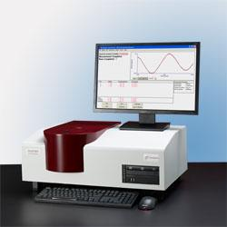
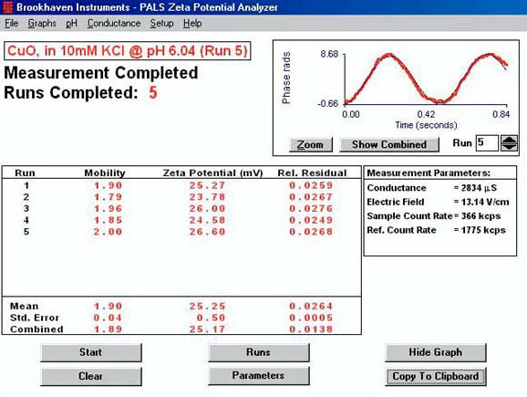

Chemical Sciences →COLLOID AND SURFACE CHEMISTRY VIRTUAL LAB →List Of Experiments
Colloid and Surface Chemistry Virtual Labs
The Zetasizer Nano series calculates the zeta potential by determining the Electrophoretic Mobility and then applying the Henry equation. The electrophoretic mobility is obtained by performing an electrophoresis experiment on the sample and measuring the velocity of the particles using Laser Doppler Velocimetry (LDV).

Zeta Potential:
The development of a nett charge at the particle surface affects the distribution of ions in the surrounding interfacial region, resulting in an increased concentration of counter ions (ions of opposite charge to that of the particle) close to the surface. Thus an electrical double layer exists around each particle. The liquid layer surrounding the particle exists as two parts; an inner region, called the Stern layer, where the ions are strongly bound and an outer, diffuse, region where they are less firmly attached. Within the diffuse layer there is a notional boundary inside which the ions and particles form a stable entity. When a particle moves (e.g. due to gravity), ions within the boundary move with it, but any ions beyond the boundary do not travel with the particle. This boundary is called the surface of hydrodynamic shear or slipping plane. The potential that exists at this boundary is known as the Zeta potential.

The zeta potential is the overall charge a particle acquires in a specific medium.
- The magnitude of the zeta potential gives an indication of the potential stability of the colloidal system
- If all the particles have a large negative or positive zeta potential they will repel each other and there is dispersion stability
- If the particles have low zeta potential values then there is no force to prevent the particles coming together and there is dispersion instability
- A dividing line between stable and unstable aqueous dispersions is generally taken at either +30 or -30mV
- Particles with zeta potentials more positive than +30mV are normally considered stable
- Particles with zeta potentials more negative than -30mV are normally considered stable
Electrophoresis
When an electric field is applied across an electrolyte, charged particles suspended in the electrolyte are attracted towards the electrode of opposite charge. Viscous forces acting on the particles tend to oppose this movement. When equilibrium is reached between these two opposing forces, the particles move with constant velocity.
The velocity of the particle is dependent on the following factors :- Strength of electric field or voltage gradient.
- The Dielectric constant of the medium.
- The Viscosity of the medium.
- The Zeta potential.
The velocity of a particle in an electric field is commonly referred to as its Electrophoretic mobility. With this knowledge we can obtain the zeta potential of the particle by application of the Henry equation.
Henry Equation
Henry Equation is given by:
UE=2εζ ƒ(ka) / 3η
- ζ=Zeta Potential
- UE=Electrophoretic mobility
- ε = Dielectric constant
- η = Viscosity
- ƒ (ka) = Henry's function . Two values are generally used as approximations for the f(ka) determination : either 1.5 or 1.0.
Measuring Electrophoretic Mobility
It is the electrophoretic mobility that we measure directly with the conversion to zeta potential being inferred from theoretical considerations. How is electrophoretic mobility measured? The essence of a classical micro-electrophoresis system is a cell with electrodes at either end to which a potential is applied. Particles move towards the electrode of opposite charge, their velocity is measured and expressed in unit field strength as their mobility.

The technique used to measure this velocity in Malvern‘s Zetasizer Nano series of instruments is Laser Doppler Velocimetry.
Laser Dopler Velocimetry
In both these examples, it is actually the velocity of tiny particles within the fluid streams moving at the velocity of the fluid that we are measuring. Therefore, LDV is well placed to measure the velocity of particles moving through a fluid in an electrophoresis experiment.

The light scattered at an angle of 17° is combined with the reference beam. This produces a fluctuating intensity signal where the rate of fluctuation is proportional to the speed of the particles. A digital signal processor is used to extract the characteristic frequencies in the scattered light.
Operation method of Zeta Nano sizer instruement:

Index to the figure:
- used to provide an illumination of the particles within the sample.
- centre of the cell where the scattering angle of 17 degree is detected.
- sends the information to the 4.
- digital signal processor
Where the Zetasizer Nano software produces a frequency spectrum from which the electrophoretic mobility and hence the zeta potential information is calculated.
- used to reduce the intensity of the laser and hence reduce the intensity of the scattering.
- to maintain the alignment of the scattering beams.